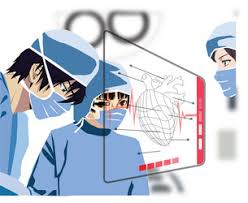

The history of the Hidden Leaf Village hospital in the Land of Fire is deeply intertwined with the
village's
evolution and the challenges faced by its shinobi inhabitants. As the village grew, so did the need for a
specialized medical facility to address the injuries sustained during ninja missions and battles. The hospital's
origins can be traced back to the village's founding era when the need for a dedicated healing space became
apparent.
Over the years, the hospital underwent several transformations, reflecting advancements in medical techniques and
technology. It gradually evolved from a basic healing center to a sophisticated institution, mirroring the overall
progress of the Hidden Leaf Village. The village's commitment to the welfare of its shinobi led to the
establishment of the hospital as a central hub for medical care, staffed by skilled and compassionate medical
ninja.

One pivotal figure in the hospital's history is Tsunade Senju, who eventually became the Fifth Hokage. Tsunade not
only played a key role in the leadership of the village but also brought her exceptional medical skills to the
hospital. Under her guidance, the hospital reached new heights, blending traditional healing methods with advanced
chakra-based
Throughout the series, the hospital witnessed significant events and became a backdrop for crucial character
developments. It served as a place where injured ninjas faced not only physical but also emotional challenges. The
hospital became a symbol of resilience and recovery, embodying the indomitable spirit of the Hidden Leaf Village.
As the Naruto storyline progressed, the hospital continued to adapt to the ever-changing landscape of the ninja
world. It became a testament to the village's commitment to the well-being of its people, showcasing the integral
role that medical care plays in sustaining the strength and vitality of the Hidden Leaf Village.